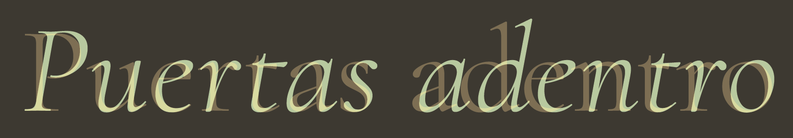
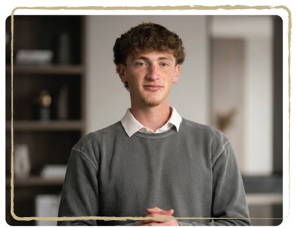

Mijal Averbuch
Diseñadora Gráfica y Dirección de Arte
Especializada en identidad visual y diseño editorial. Trabaja desde la escucha y la observación, construyendo sistemas que revelan la esencia de cada proyecto.

Diseñadora Gráfica y Dirección de Arte
Especializada en identidad visual y diseño editorial. Trabaja desde la escucha y la observación, construyendo sistemas que revelan la esencia de cada proyecto.

Project Manager
Coordina procesos, tiempos y equipos para que cada proyecto avance con claridad y coherencia. Su enfoque combina organización, comunicación y una mirada estratégica orientada a transformar ideas en resultados.
Producción Audiovisual
Explora el lenguaje de la imagen y el movimiento para construir relatos visuales sensibles y cercanos. Su trabajo busca capturar detalles, atmósferas y momentos que ayudan a dar vida a cada historia.